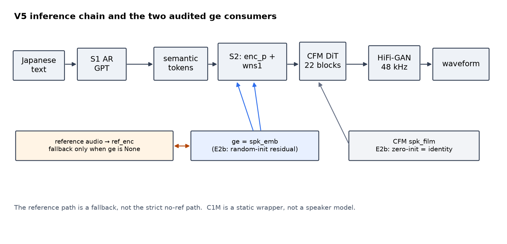
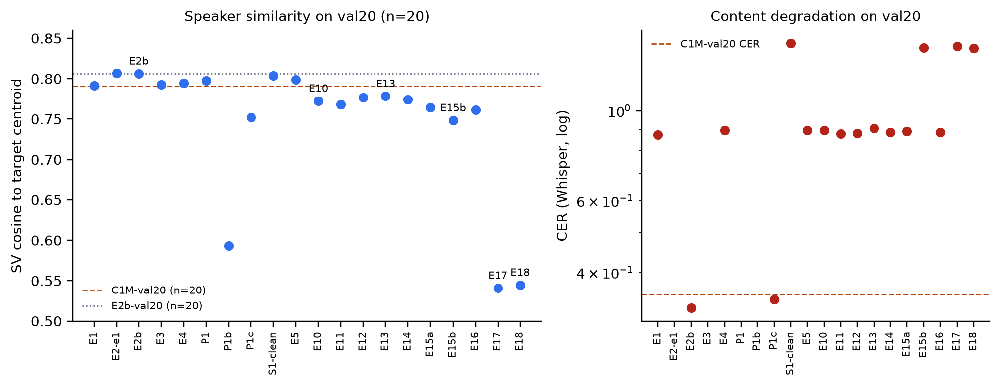
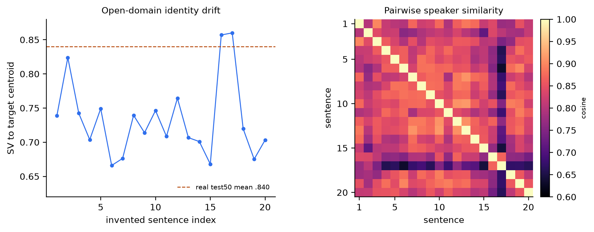

声音 C 实验论文 v1.1（审计修订版）
2026-11-21
基于 GPT-SoVITS V5dev（本地包 2026-10-06）的离线实验记录
状态与范围：本文是负结果研究报告，不是成功交付。严格无参考的“文本推理路径”已经实现并做了运行时检查，但“训练学到的说话人身份稳定输出目标音色”没有成立；人耳判定也不支持。本文把“代码不再要求参考音频”与“模型已学会并锁定目标声音”严格分开。
本文不包含游戏解包、文本抽取等前置工作，不公开音频、角色语音或模型权重。所有数字来自本会话实际产物；无法复核的均标注为“summary-only / 工件缺失”。
本文研究：能否在不读取参考音频、参考文本或参考特征的条件下，让 GPT-SoVITS V5 单说话人地生成目标角色 Kan 的日文语音，并让训练学到的说话人参数真正进入声学模型。
我们把“reference-free”拆成四级：（1）推理不传外部参考音频；（2）不使用参考音频的缓存特征；（3）模型训练出稳定的说话人身份表示并实际消费；（4）不同文本和随机种子下稳定输出目标音色。当前系统只对（1）有代码级证据，对（2）有缓存清空和运行时检查的部分证据，没有达到（3）和（4）。
实现上，ref_free=True 会检查 ref_audio_path/aux_ref_audio_paths 为空、要求 spk_emb 存在、清空 prompt_cache，并用 ge = spk_emb 调用 decode_encp。decode_encp 在 ge is None 时仍有 ref_enc(refer) 回退；无参考路径传入了非空 ge，所以该回退未被触发，但不能把代码描述成“没有 ref_enc 分支”。STRICT_NO_REF=1 拦截了 torchaudio.load、soundfile.read、可选 librosa.load，以及 TTS.set_ref_audio/_set_ref_spec/_set_prompt_semantic；它仍不拦截任意文件读取（例如 numpy.load），这是一条仍然存在的审计边界。
评测上，真实 test50 的目标 SV 为 0.8398；无参考 E2b 50 条为 0.8241，C1M 后为 0.8128。开放域 20 句完全新编文本 CER 0.0754，目标 SV 只有 0.7332；20 条输出 pairwise 均值 0.8233、最低 0.6342。但真实 test50 的同说话人 pairwise 均值只有 0.7684、最低 0.4681——生成音频的 pairwise 反而更高，因此 pairwise 不能作为“不是同一个人”的证据；它更多反映同一管线的信道同质性。在本评测中更有判别力的是到目标质心的距离：开放域比真实 test50 低约 0.107（其中约 0.011 来自 C1M 母带效应）。
训练侧，E10–E18 的九组条件注入/解冻（E15 两个生成臂）点估计都低于同划分的 C1M-val20 0.7909，但 E10–E18 的逐样本数据、权重和日志均已删除，只能作为 summary-only 负结果。E17/E18 解冻 enc_p 后 SV 0.541/0.545、CER 1.44/1.43；这支持“当前优化设置下内容编码器被破坏”，不支持“内容通道在架构上不能承载说话人身份”。
C1M 是固定低切/压缩/高架母带，不是模型级说话人学习。它把 LTAS/RMS 拉近真值，但不改善 CPP，且 50 条 SV 低于 raw；同划分 val20 的 C1M 也从 E2b 的 0.8063 降到 0.7909。Shelf-B 的 50 条 SV 为 0.8256（高于 raw），但 2–8 kHz 份额 0.206，明显过冲，且是在同一 test50 上做 wrapper 选择，不能当作独立泛化证据。
用户非盲试听后判定“没有一个同一个人”。这不是 ABX，也不是多人盲听；但它是否定验收，不能用 SV 均值驳回。本文的最终结论是：L1 有代码与运行时证据；L2 只有部分证据；L3 未成立；L4 失败。C1M 不是成功模型；E10–E18 是当前配置下的负结果，不是架构不可能性的证明。
关键词：GPT-SoVITS V5；无参考 TTS；单说话人；条件通路；负结果；评测效度；开放域
零样本 TTS 常用参考音频同时提供内容上下文和音色锚点。把参考完全移除后，模型必须从训练中固化说话人身份；这比少样本微调更苛刻，因为推理时不允许任何音频、文本或缓存特征。
我们的初始目标是：只输入日文文本；不读参考音频/文本/特征；训练学习固定说话人参数；重启后不依赖参考文件；音色稳定、发音正确、韵律可接受。
真正做下去后，问题分成四层：
本文的主要修正是：早期版本把“路径层通过”误写成“身份层成立”，又把 pairwise 相似度误读成“不是同一个人”。本版逐项拆开，并保留失败结果。
ge 两条消费路径与 spk_emb/ref_enc 尺度差异的代码级审计，但把机制解释降级为假设；| 级别 | 定义 | 可检验证据 | 当前状态 |
|---|---|---|---|
| L1 | 推理不传外部参考音频 | 参数/缓存/调用路径检查 | 有代码与运行时证据 |
| L2 | 不使用参考音频的缓存特征 | 缓存污染后清空、refer_spec=[] |
部分证据；改名测试不完整 |
| L3 | 训练出稳定说话人表示并被模型消费 | 零化/替换参数改变输出；条件通路审计 | 未成立；内部零化探针无保留工件，不能作为可复核证据 |
| L4 | 不同文本/种子稳定输出目标音色 | 开放域 SV、pairwise、人耳 | 失败；开放域 SV 0.733 |
这张表是全文的结论骨架。L1 不等于 L3/L4；“不要求参考音频”不能写成“已学会目标声音”。
日文文本
→ S1 AR GPT（s1v3.ckpt）
→ 语义 token
→ quantizer.decode → enc_p
→ CFM DiT（22 blocks）
→ HiFi-GAN（48 kHz）
→ waveform
参考条件路径为 reference audio → ref_enc → ge。在 E2b 中，ge 主要有两个消费者；当前代码还存在第三条 CFM 侧 spk_film，但 E2b 没有训练该键，加载后为零初始化恒等：
enc_p → TextEncoder → mrte：x = cross_attn(...) + ssl_enc + ge，随后再过 c_post（512→192）；wns1 → Encoder → WN.cond_layer：(B,512,1) → (B,8192,1)，加到 8 层门控激活前的加性项。CFMV5.spk_film 是另一条 CFM 侧注入；E2b 的 ckpt 没有训练过的 spk_film 键，加载后零初始化，gamma=beta=0，FiLM 恒等。

TTS.run 在 ref_free=True 时：
ref_audio_path 和 aux_ref_audio_paths；speaker_id 和 vits_model.spk_emb；_clear_ref_cache() 清空 prompt_semantic、refer_spec、raw_audio 等；ge = vits_model.spk_emb，扩展 batch 后调用 decode_encp(..., ge, ...)。decode_encp 的代码在 ge is None 时仍会执行：
if ge is None:
refer_lengths = ...
refer_mask = ...
ge = self.ref_enc(refer[:, :704] * refer_mask, refer_mask)
无参考路径传入 ge=spk_emb，因此该回退不是执行路径；但“代码没有 ref_enc 分支”的说法是错的，正确说法是“回退存在，但被非空 ge 短路”。
infer_noref.py 的 STRICT_NO_REF=1 做六件事：
torchaudio.load = deny
sf.read = deny
librosa.load = deny # if importable
TTS.set_ref_audio = deny
TTS._set_ref_spec = deny
TTS._set_prompt_semantic = deny
它没有全局拦截 numpy.load 或任意文件读取；sf.write 仍可用。当前 infer_noref.py 的代码路径只调用 sf.write，不调用 sf.read；这是静态审计加固，不是“所有文件读取都被证明阻断”。论文把这一限制写进 §9。
缓存污染测试（先 set_ref_audio 填充缓存，再 ref_free）显示 prompt_semantic=None、refer_spec=[]、raw_audio 不存在，这一条有运行时输出。
早期“参考目录改名后仍可生成”的测试只改了 data/kan/wavs，没有覆盖 logs/kan/4-cnhubert、logs/kan/5-wav32k 等特征缓存；而且该目录现在已恢复，状态不可复现。因此它只能作为一次性观察，不能作为 L2 的完整证明。
E2b 的 spk_emb 由 s2_train_v3_lora.py 创建。实际顺序是：
net_g = get_model(hps)；init_spk_emb(net_g)；pretrained_s2G（strict=False）。init_spk_emb 在预训练 ref_enc 尚未加载时调用，因此 spk_emb 从随机初始化 ref_enc(neutral) 出发，而不是预训练 ref_enc(neutral)。实测：
| 量 | 值 |
|---|---|
预训练 ref_enc(neutral) 范数 |
33.10 |
seed=1234 随机初始化 spk_emb 范数 |
1.478 |
E2b ckpt spk_emb 范数 |
1.462 |
ckpt 与随机初始化的 cosine 不能作为证据：若 seed=1234 的随机初始化不能逐位复现，cosine≈0 是必然；若能逐位复现，则说明训练把向量转到了另一个方向，反而支持“训练改变了它”。本文只保留范数证据，不把 cosine 当作“仍是随机 init”的证明。
这使 §7.2 的“1.4622 vs 25.34”至少部分来自初始化顺序，而不是训练后的稳定学得表示。修复方式是把 init_spk_emb 移到预训练加载之后；本文没有重训 E2b，因此所有 E2b 结果仍对应这个带缺陷的初始化，必须在解释时保留这一限制。
1,200 句单说话人日文语音，约 102.1 分钟。按 source_id_group 划分为 1,100 train / 50 val / 50 test；test 不参与训练。
| split | n | 时长（秒） | 用途 |
|---|---|---|---|
| train | 1,100 | 5,622.68 | S2 训练 |
| val | 50 | 246.514 | 诊断/调参；20 句实验取前 20 |
| test | 50 | 256.995 | held-out 评测 |
关键区分：E1/E2/E3/P1/E10–E18 的“20 句”是 val20 的前 20 行，属于调参/诊断集；test50 才是 held-out。20 句结果不能与 50 句结果直接比较。
另写 20 句日文，主题为日常场景，不复制角色口癖，不来自 train/val/test；只用于推理与评测，不参与训练。它们与 train/val/test 的 8-gram 交集仅 1 条，但文本被作者清过标点，难度低于原台词；开放域 CER 的优势有一部分来自这个难度差，不能全部归因于模型。
train.csv 前 20 条训练参考计算，只用于评测。norm_text 去掉标点/空白，但没有去掉 ♪；test50 有 16/50 句含 ♪，这会抬高 CER。用同一 ERes2NetV2、同一目标质心（train 前 20 条），对 test50 真实音频计算：
| 分布 | n | 到质心 SV 均值 | pairwise 均值 | pairwise 最低 | pairwise p10 |
|---|---|---|---|---|---|
| 真实 test50 | 50 | 0.8398 | 0.7684 | 0.4681 | 0.6763 |
| 真实 test50 前 20（与 open20 同 n） | 20 | — | 0.7530 | 0.5035 | 0.6381 |
| 生成 open20 | 20 | 0.7332 | 0.8233 | 0.6342 | 0.7594 |
| 生成 test50（raw） | 50 | 0.8241 | — | — | — |
生成 open20 的 pairwise 高于真实同说话人（0.8233 vs 0.7684；同 n=20 时 0.8233 vs 0.7530），最低值也更高。所以 pairwise 不能被解释为“不是同一个人”；它只能说明这批输出的信道/嵌入更同质。最低值还受对数影响（open20 380 对，真实 test50 2450 对），主判据应看均值。在本评测中更有判别力的是到目标质心的距离：open20 比真实 test50 低 0.1066（含 C1M 效应约 0.011）。
| 路线 | 注入点 | 关键问题 |
|---|---|---|
| E1 | spk_emb + CFM LoRA |
只改注意力能否改音色 |
| E2/E2b | + wns1 |
条件融合是否足够 |
| E3 | + bridge |
更多条件侧是否更好 |
| E10/E11 | 纯 spk_film |
FiLM 幅度区间 |
| E12 | spk_emb + spk_film |
两者都训练/加载 |
| E13 | 目标 spk_emb 初始化 + film |
方向正确是否有用 |
| E14 | 零初始化 spk_add(ge) 加到 mu |
加性注入是否避开乘性失真 |
| E15 | spk_emb × 2.6 / × 17.3 |
尺度是否是主要问题 |
| E16 | DiT 时间嵌入 spk_t |
不碰内容/条件的全局通道 |
| E17 | 解冻 enc_p.mrte |
正确消费端是否可用 |
| E18 | 解冻完整 enc_p |
内容编码器整体重训 |
| 实验 | split | n | seed | steps | 工件状态 |
|---|---|---|---|---|---|
| E2b-val20 | val20 | 20 | 42 | 32 | 音频 + 结果；均值来自早期报告 |
| E10–E18 | val20 | 20 | 未记录 | 32 | 权重/日志/逐样本 JSON 已删，summary-only |
| C1M-val20 | val20 | 20 | 42 | 32 | 本次补跑：音频 + score JSON |
| E2b-test50×3 | test50 | 150 | 42/43/44 | 32 | 3 个目录 + summary |
| C1M-50 | test50 | 50 | 42 | 32 | 音频 + results + score |
| Open20 | 新编 | 20 | 42 | 32 | 音频 + score + pairwise |
这张表是阅读所有数字的前置条件。E10–E18 的均值不能做逐样本统计，也不能当作可复现实验；它们是当时记录的 summary-only 负结果。
STRICT_NO_REF=1 下新进程能生成 48 kHz 音频；ref_free 拒绝参考路径、清空缓存；缓存污染测试后 refer_spec=[]。这些是实际运行观察。
但严格模式只覆盖六个已知 API，改名测试不完整；因此本文只写“L1 有代码/运行时证据，L2 部分证据”，不写“所有参考路径已被证明阻断”。
50 条 test × 3 seeds：
| 指标 | 结果 |
|---|---|
| SV 均值（合并） | 0.8258 |
| SV 种子范围 | 0.8241–0.8287 |
| CER 中位数 | 0.2692 |
| CER 均值 | 0.4078 |
| CER P90 | 0.5385 |
| 长重复（CER>1） | 2/150（1.3%） |
| 空输出 | 0/150 |
真实同说话人 test50 的目标 SV 是 0.8398；无参考 raw 的 50 条是 0.8241，C1M 后 0.8128。也就是说，held-out 台词上无参考与真实基线只差约 0.016–0.027，但这批句子与训练语料同分布，不能外推到开放域。
“参考控制”指 S1 prompts=None、S2 使用参考音频与参考 spec 的同文本运行；它不是严格无参考，也不是“参考音频 + 参考语义”的完整原版。该控制 SV 0.8938、CER 均值 0.6866（中位数 0.2662；去掉最长重复 #49 后均值 0.3049）；参考控制的音色更高，但内容并没有整体更差——0.6866 的均值被 #49 的 CER 19.39 拉高。0.068 的 SV 差也不能被当作纯身份空间：参考控制本身高于真实 test50 的 0.8398，说明这个 SV 指标会奖励某些原型化输出。
E10–E18 的 20 句是 val20。匹配基线：
C1M 在 val20 上把 CER 从 raw 的 0.3268 推到 0.3523（4/20 句变化），但在 test50 上从 0.2900 降到 0.2874；两个划分方向相反。逐句 CER 与另一母带 e2b_pp20 20/20 相同，说明这几句的 ASR 变化由共同高频提升驱动，不是 C1M 特有。因此本文只把 CER 当作描述量，不做“C1M 改善/恶化内容”的推断，也不把两个划分的 CER 直接相减。
九组条件实验的 SV 点估计为 0.5410–0.7784，全部低于同划分的 E2b-val20 0.8063，也低于 C1M-val20 0.7909；但 E10–E18 没有逐样本数据，不能做置信区间或显著性检验，只能写“点估计均低”。
| 实验 | SV | CER | 解释 |
|---|---|---|---|
| E10 film-only | 0.7725 | 0.8936 | FiLM 首次真正接入，仍退化 |
| E11 film-only | 0.7684 | 0.8765 | lr 5e-4，仍差 |
| E12 spk_emb+film | 0.7767 | 0.8798 | 两者都训练/加载，仍差 |
| E13 target-init | 0.7784 | 0.9061 | 目标初始化仍差 |
| E14 spk_add | 0.7743 | 0.8851 | 加性注入仍差 |
| E15a ×2.6 | 0.7644 | 0.8889 | 零训练尺度探针 |
| E15b ×17.3 | 0.7484 | 1.4273 | 内容崩 |
| E16 spk_t | 0.7611 | 0.8859 | 时间嵌入仍差 |
| E17 enc_p.mrte | 0.5410 | 1.4404 | 当前设置下内容崩 |
| E18 enc_p-full | 0.5448 | 1.4258 | 同上 |
E17/E18 的 CER 1.4258–1.4404 与 E15b 1.4273 落在同一窄带，形态上更像 runaway/长重复，而不是三种不同机制。由于逐样本 JSON 缺失，本文不把这三组当作机制证据；只记录“当前设置下失败”。

| 系统 | n | split | SV | CER | <500 Hz | 2–8 kHz | RMS | CPP |
|---|---|---|---|---|---|---|---|---|
| 真值 test | 50 | test | — | — | 0.179 | 0.1535 | 0.1228 | 0.1659 |
| E2b raw | 50 | test | 0.8241 | 0.2900 | 0.2337 | 0.1269 | 0.0866 | 0.1262 |
| C1M | 50 | test | 0.8128 | 0.2874 | 0.1794 | 0.1533 | 0.117 | 0.127 |
| C1H | 50 | test | 0.8139 | 0.2907 | 0.173 | 0.170 | 0.116 | 0.127 |
| Shelf-B | 50 | test | 0.8256 | 0.2973 | 0.145 | 0.206 | 0.102 | 0.127 |
C1M 把低频和 2–8 kHz 份额拉得接近真值，但“最接近”取决于口径：C1H 的 <500 Hz 更低、2–8 kHz 更高，并不是所有频带都更近。C1M 的 SV 比 raw 低 0.011，CPP 几乎不变。Shelf-B 的 SV 是唯一高于 raw 的 wrapper，但 2–8 kHz 份额 0.206 明显过冲，且四个 wrapper 都在同一 test50 上比较后选默认，test50 对 wrapper 不再是独立选择集。因此不能把 Shelf-B 当作“更好”的泛化证据。
同划分 val20 上，C1M 也从 E2b 的 0.8063 降到 0.7909。两个划分方向一致：C1M 是频响 wrapper，不是音色模型。
20 句完全新编文本：
| 指标 | 开放域 20 | 真实 test50 |
|---|---|---|
| CER 均值 | 0.0754 | — |
| 目标 SV 均值 | 0.7332 | 0.8398 |
| SV 范围 | 0.666–0.860 | 0.672–0.913（真实逐句） |
| pairwise 均值 | 0.8233 | 0.7684 |
| pairwise 最低 | 0.6342 | 0.4681 |
开放域 CER 反而更好：句子更平、更少 ♪/……/～；但目标 SV 比真实 test50 低 0.1066。注意：开放域 20 条是 C1M 后音频，而真实 test50 是 raw；C1M 在 test50 上会降低约 0.011，因此 0.1066 里混入了一小部分 wrapper 效应，不能全部归因于模型。raw open20 未保留，无法做完全匹配的 raw-vs-raw 比较。
分布上也不是完全分离：20 条里有 2 条达到或超过真实 test50 的均值 0.8398（最高 0.8601），所以“系统性下降”是均值层结论，不是“每一条都低”。
pairwise 的解释必须反过来：生成音频比真实同说话人更同质，不能用“pairwise 低”或“最低 0.634”证明“不是同一个人”。更有力的证据是目标 SV 的系统性下降，以及用户的人耳判断。

用户听完后说“就没有一个是同一个人的”。这是非盲、单听众反馈，不能当作 ABX 或总体统计；但它是否定验收，不能用 0.733 的平均值驳回。
9/3/1 三句被用户点名最差。原句 / 去标点 / 改读音：
| 句 | 原句 CER/SV | 去标点 CER/SV | 改读音 CER/SV |
|---|---|---|---|
09 ん～…… |
0.263 / 0.861 | 0.316 / 0.716 | — |
03 あはは…… |
0.462 / 0.758 | 0.360 / 0.770 | — |
01 にひっ♪ じゃ… |
0.643 / 0.853 | 0.308 / 0.814 | 0.438 / 0.818 |
09 原句反而最好；03 去标点略好，但 ASR 仍多出 うっ…はははは…；01 的 じゃ 被听成 チャ、一言 被听成 意地が，改读音能修一部分，但 にひっ 仍被听成 へへへ。在这 3 句里没有统一文本规则能同时修好。
ge 的消费路径ge 同时进入 enc_p.mrte 和 wns1.enc.cond_layer。E2b 的 ckpt 中 enc_p* key 为 0（整段冻结）；wns1 被训练，ΔL2 约 6.12%，其中 cond_layer 约 5.40%。spk_film 不在 ckpt 中，加载后零初始化。
因此正确表述是：
ge 被传入 wns1 并被 cond_layer 消费，不是“完全没有进入声学模型”；是否有效是另一回事；ge 没有通过 CFM FiLM 进入，因为 spk_film 恒等；enc_p.mrte 这条路径在 E2b 中冻结。实测：
spk_emb 范数 1.4622（512 维，向量本身的每通道 RMS 0.0646，按 1.4622/√512）；ref_enc 尺度 25.34（一条参考的输出范数，E13；工件已删）；wns1.enc.cond_layer 有效权重范数 31.705；cond_layer.bias 每通道 RMS 0.0804；Wg 的输出范数 3.0088，8192 通道，输出每通道 RMS 0.0332，是 bias 的 0.41 倍；spk_emb 拉到 25.34 尺度，Wg 输出每通道 RMS 约 0.576，是 bias 的 7.17 倍。注意：0.0646 是 spk_emb 向量的每通道 RMS，0.0332 是 Wg 输出的每通道 RMS；两者不是同一个量，不能混用。与 bias 比较的是后者。
这里必须区分三件事：
ge 同时传给 enc_p 与 wns1，cond_layer 是 1×1 投影 + weight_norm，对 g 没有额外归一化；tanh/sigmoid 作用在 x_in + g_l 的和上。spk_emb 的范数与一条参考的 ref_enc 输出范数相差约 17.3 倍；Wg 输出与 bias 相比约 0.41×。但 §3.5 已说明 spk_emb 初始化顺序有缺陷，这个 1.4622 不能当作“预训练中性向量训练后的范数”。g_l 加到的是 x_in，不是 bias，判断门控是否被接管应比较 RMS(g_l)/RMS(x_in)，本文没有做这项前向统计。E15 的零训练缩放（×2.6 SV 0.7644/CER 0.8889；×17.3 SV 0.7484/CER 1.4273）与“尺度不是唯一问题”一致，但不能反过来证明双标定点。本文只保留“尺度差异与弱 socket 的描述性证据”，不写“机制已确认”。
E17（只解冻 enc_p.mrte）和 E18（完整 enc_p）都出现 SV 0.541/0.545、CER 1.44/1.43。可能原因包括：
prompt_len=0、CFM LoRA 同时训练）；没有做这些因素的消融，因此不能断言“内容通道从架构上不能承载说话人身份”。正确结论是：在当前优化设置下，解冻 enc_p 没有取得有效改善，且伴随内容崩溃。
D2 诊断显示：真实 mel 过同一个 V5 vocoder，CPP 只有 0.1260，与无参考 E2b 的 0.1262 几乎相同；真值约 0.1659。D2 是“GT mel → 同一个 48 kHz Generator”的受控前向，不是完整 TTS；它没有并排的教师参考行，因此 0.1260 不是该 vocoder 的 CPP 上限。该诊断说明 vocoder 是 CPP 瓶颈之一，不是 CFM 单独的问题。
P5 是在 D2 基础上解冻最后 upsample、微调 100 步的 vocoder 实验；GT mel 的 CPP 从 0.126 拉到 0.1644，但接回无参考后 SV 0.7424、CER 0.8939（20 条 summary-only，没有独立 score JSON）。它接近 E5 的 CER 0.8940，但两者是不同工件，不能互证。该结果只作为负结果，不作为主表。

| 类别 | 现象 | 代表 | 结论 |
|---|---|---|---|
| A 合同边界 | 严格模式只覆盖部分读取函数 | infer_noref.py |
L1 有证据，L2 部分 |
| B 条件未接入 | spk_film 零初始化 |
E2b | 训练参数不等于生效；零化探针未留工件 |
| C 条件接入但弱 | Wg 输出 RMS 0.41× bias |
E10–E16 | 点估计均低 |
| D 内容破坏 | enc_p 解冻后 CER 1.43 |
E17/E18 | 当前设置下失败 |
| E 频响 wrapper | C1M 改善 LTAS，SV 下降 | C1M | 不是模型 |
| F 感知失败 | 开放域 SV 0.733，用户否定 | Open20 | 单说话人未成立 |
| G 评测误读 | pairwise 高于真实基线 | Open20 | 不能证明“不同人” |
| H 工件缺失 | E10–E18 无逐样本 | E10–E18 | summary-only |
♪ 清洗；test50 有 16/50 句含 ♪，CER 被抬高；开放域文本更干净。.8128 来自 50 条 C1M 结果；mastered=None 的旧 run 不能作为默认 C1M 的可复算来源；本次 val20 补跑有完整 mastered 元数据。spk_emb 初始化顺序有缺陷：它在预训练 ref_enc 加载前初始化，因此是随机 ref_enc(neutral)；这会影响 §7.2 的尺度解释。未重训。infer_noref.py 的六 API 版本是加固版，未用同一日志重跑。L1 的代码路径证据不依赖这六个 patch，但“六 API 运行时全部触发”没有当日日志。spk_t 注入代码不在当前树中，只能依据历史实验记录；不能外部复核其注入点。如果要在 V5 上再做无参考单说话人：
enc_p/wns1/CFM 是否真的消费 ge，不靠命名猜。本文实现了 L1 的 V5 文本推理路径，并证明它在参数/缓存/运行时层面有证据；但 L2 只有部分证据，L3 未成立，L4 失败。
因此，当前可交付的是“文本输入、无外部参考文件、缓存清空的管线”和一份可复核的失败审计；不能交付“已训练学会 Kan 的无参考模型”。如果继续，必须先补工件、做同划分对照，再考虑改架构或参考条件 V5；继续在冻结 ckpt 上换 lr/注入点，没有证据支持。
只复现统计/图（不需要模型）：
cd reference-free
python code/validate_paper.py
python code/make_figures.py
python code/make_html.py
export_data.py 只从 data/open20_score.json 重建 open_domain.csv，不需要音频或模型；export_real_baseline.py 需要本地音频、ERes2NetV2、V5 包，不是“无模型可跑”的脚本。infer_noref.py 需要 V5 包与训练权重，公开仓库不附带。
| 文件 | 内容 |
|---|---|
data/experiments.csv |
主实验、n、SV/CER、provenance 标记 |
data/open_domain.csv |
20 句新编文本逐句 CER/SV/时长 |
data/open20_score.json |
上述 20 句的原始逐句评分 |
data/c1m_val20_score.json |
C1M-val20 的逐句评分与 mastered 元数据 |
data/split_ids.csv |
1200 个 id 的 train/val/test 归属 |
data/real_baseline.json |
真实 test50 的 SV/pairwise 摘要 |
data/pairwise.csv |
生成 open20 的 20×20 相似度 |
data/real_test50.csv |
真实 test50 逐句目标 SV |
data/real_pairwise.csv |
真实 test50 的 50×50 相似度 |
data/heldout_summary.csv |
3 seeds + pooled 的 SV/CER 摘要 |
data/worst3.csv |
9/3/1 的原句/去标点/改读音指标 |
data/weight_audit.csv |
spk_emb、ref_enc、cond_layer 的权重级审计 |
data/diagnostics.csv |
D2/P5 的 CPP、SV、CER 与工件状态 |
data/bands.csv |
真值/raw/C1M/C1H/Shelf-B 的 LTAS、RMS、CPP |
data/splits.csv |
train/val/test 数量、时长、SHA-256 |
data/provenance.csv |
每个实验的 split/n/工件状态 |
data/c1_fir.npy |
C1M 静态 FIR，不是音频或权重 |
gin_channels 全局条件的来源之一）：https://arxiv.org/abs/2106.06103y_emb）：https://github.com/RVC-Boss/GPT-SoVITS/pull/466。它只作为相关先例，不是 V5，也没有成功指标。research/external/V5_REF_FREE_SEARCH.md。本文不包含音频、角色语音或模型权重；角色名与作品名仅用于说明实验对象。